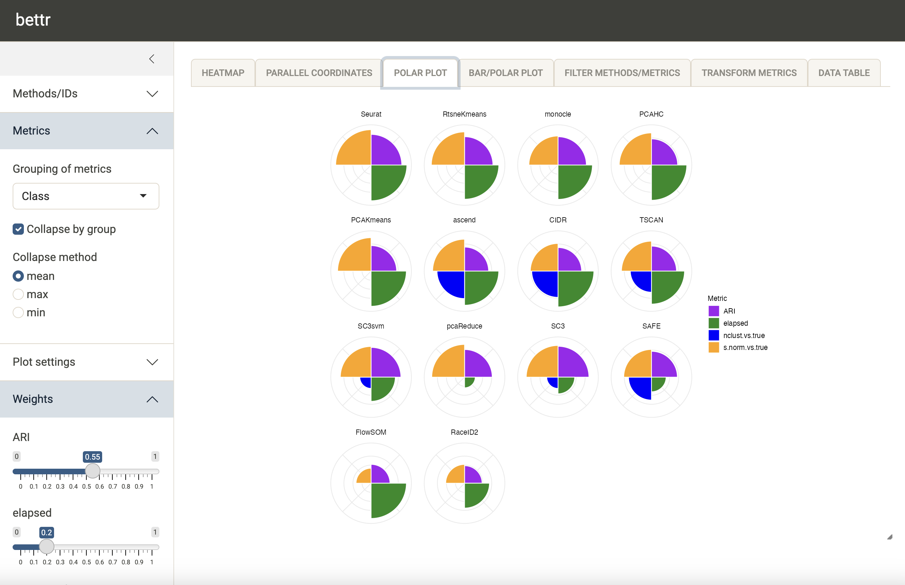

Introduction
Method benchmarking is a core part of computational biology research, with an intrinsic power to establish best practices in method selection and application, as well as help identifying gaps and possibilities for improvement. A typical benchmark evaluates a set of methods using multiple different metrics, intended to capture different aspects of their performance. The best method to choose in any given situation can then be found, e.g., by averaging the different performance metrics, possibly putting more emphasis on those that are more important to the specific situation.
Inspired by the OECD ‘Better
Life Index’, the bettr package was developed to provide
support for this last step. It allows users to easily create performance
summaries emphasizing the aspects that are most important to them.
bettr can be used interactively, via a R/shiny application,
or programmatically by calling the underlying functions. In this
vignette, we illustrate both alternatives, using example data provided
with the package.
Given the abundance of methods available for computational analysis
of biological data, both within and beyond Bioconductor, and the
importance of careful, adaptive benchmarking, we believe that
bettr will be a useful complement to currently available
Bioconductor infrastructure related to benchmarking and performance
estimation. Other packages (e.g., pipeComp
or SummarizedBenchmark)
provide frameworks for executing benchmarks by applying and
recording pre-defined workflows to data. Packages such as iCOBRA and
ROCR
instead provide functionality for calculating well-established
evaluation metric. In contrast, bettr focuses on visual
exploration of benchmark results, represented by the values of
several evaluation metrics.
Installation
bettr can be installed from Bioconductor (from release
3.19 onwards):
if (!require("BiocManager", quietly = TRUE))
install.packages("BiocManager")
BiocManager::install("bettr")Usage
suppressPackageStartupMessages({
library("bettr")
library("SummarizedExperiment")
library("tibble")
library("dplyr")
})The main input to bettr is a data.frame
containing values of several metrics for several methods. In addition,
the user can provide additional annotations and characteristics for the
methods and metrics, which can be used to group and filter them in the
interactive application.
## Data for two metrics (metric1, metric2) for three methods (M1, M2, M3)
df <- data.frame(Method = c("M1", "M2", "M3"),
metric1 = c(1, 2, 3),
metric2 = c(3, 1, 2))
## More information for metrics
metricInfo <- data.frame(Metric = c("metric1", "metric2", "metric3"),
Group = c("G1", "G2", "G2"))
## More information for methods ('IDs')
idInfo <- data.frame(Method = c("M1", "M2", "M3"),
Type = c("T1", "T1", "T2"))To simplify handling and sharing, the data can be combined into a
SummarizedExperiment (with methods as rows and metrics as
columns) as follows:
se <- assembleSE(df = df, idCol = "Method", metricInfo = metricInfo,
idInfo = idInfo)
se
#> class: SummarizedExperiment
#> dim: 3 2
#> metadata(1): bettrInfo
#> assays(1): values
#> rownames(3): M1 M2 M3
#> rowData names(2): Method Type
#> colnames(2): metric1 metric2
#> colData names(2): Metric GroupThe interactive application to explore the rankings can then be
launched by means of the bettr() function. The input can be
either the assembled SummarizedExperiment object or the
individual components.
Example - single-cell RNA-seq clustering benchmark
Next, we show a more elaborate example, visualizing data from the
benchmark of single-cell clustering methods performed by Duo et al (2018).
The values for a set of evaluation metrics applied to results obtained
by several clustering methods are provided in a .csv file
in the package:
res <- read.csv(system.file("extdata", "duo2018_results.csv",
package = "bettr"))
dim(res)
#> [1] 14 49
tibble(res)
#> # A tibble: 14 × 49
#> method ARI_Koh ARI_KohTCC ARI_Kumar ARI_KumarTCC ARI_SimKumar4easy
#> <chr> <dbl> <dbl> <dbl> <dbl> <dbl>
#> 1 CIDR 0.672 0.805 0.989 0.977 1
#> 2 FlowSOM 0.699 0.855 0.512 0.563 1
#> 3 PCAHC 0.869 0.891 1 1 1
#> 4 PCAKmeans 0.836 0.903 0.989 0.978 1
#> 5 RaceID2 0.280 0.276 0.949 1 0.644
#> 6 RtsneKmeans 0.966 0.967 0.989 1 1
#> 7 SAFE 0.613 0.950 0.989 1 0.952
#> 8 SC3 0.939 0.939 1 1 1
#> 9 SC3svm 0.927 0.929 1 1 1
#> 10 Seurat 0.862 0.902 0.988 0.989 1
#> 11 TSCAN 0.639 0.618 1 1 1
#> 12 monocle 0.855 0.963 0.988 1 0.995
#> 13 pcaReduce 0.935 0.979 1 1 1
#> 14 ascend NA NA 1 0.988 1
#> # ℹ 43 more variables: ARI_SimKumar4hard <dbl>, ARI_SimKumar8hard <dbl>,
#> # ARI_Trapnell <dbl>, ARI_TrapnellTCC <dbl>, ARI_Zhengmix4eq <dbl>,
#> # ARI_Zhengmix4uneq <dbl>, ARI_Zhengmix8eq <dbl>, elapsed_Koh <dbl>,
#> # elapsed_KohTCC <dbl>, elapsed_Kumar <dbl>, elapsed_KumarTCC <dbl>,
#> # elapsed_SimKumar4easy <dbl>, elapsed_SimKumar4hard <dbl>,
#> # elapsed_SimKumar8hard <dbl>, elapsed_Trapnell <dbl>,
#> # elapsed_TrapnellTCC <dbl>, elapsed_Zhengmix4eq <dbl>, …As we can see, we have 14 methods (rows) and 48 different metrics
(columns). The first column provides the name of the clustering method.
More precisely, the columns correspond to four different metrics, each
of which was applied to clustering output from of 12 data sets. We
encode this “grouping” of metrics in a data frame, in such a way that we
can later collapse performance across data sets in
bettr:
metricInfo <- tibble(Metric = colnames(res)[-1]) |>
mutate(Class = sub("_.*", "", Metric))
head(metricInfo)
#> # A tibble: 6 × 2
#> Metric Class
#> <chr> <chr>
#> 1 ARI_Koh ARI
#> 2 ARI_KohTCC ARI
#> 3 ARI_Kumar ARI
#> 4 ARI_KumarTCC ARI
#> 5 ARI_SimKumar4easy ARI
#> 6 ARI_SimKumar4hard ARI
table(metricInfo$Class)
#>
#> ARI elapsed nclust.vs.true s.norm.vs.true
#> 12 12 12 12In order to make different metrics comparable, we next define the
transformation that should be applied to each of them within
bettr. First, we need to make sure that the metric are
consistent in terms of whether large values indicate “good” or “bad”
performance. In our case, for both the elapsed (elapsed run
time), nclust.vs.true (difference between estimated and
true number of clusters) and s.norm.vs.true (difference
between estimated and true normalized Shannon entropy for a clustering),
a small value indicates “better” performance, while for the
ARI (adjusted Rand index), larger values are better. Hence,
we will flip the sign of the first three before doing additional
analyses. Moreover, the different metrics clearly live in different
numeric ranges - the maximal value of the ARI is 1, while
the other metrics can have much larger values. As an example, here we
therefore scale the three other metrics linearly to the interval
[0, 1] to make them more comparable to the ARI
values. We record these transformations in a list, that will be passed
to bettr:
## Initialize list
initialTransforms <- lapply(res[, grep("elapsed|nclust.vs.true|s.norm.vs.true",
colnames(res), value = TRUE)],
function(i) {
list(flip = TRUE, transform = '[0,1]')
})
length(initialTransforms)
#> [1] 36
names(initialTransforms)
#> [1] "elapsed_Koh" "elapsed_KohTCC"
#> [3] "elapsed_Kumar" "elapsed_KumarTCC"
#> [5] "elapsed_SimKumar4easy" "elapsed_SimKumar4hard"
#> [7] "elapsed_SimKumar8hard" "elapsed_Trapnell"
#> [9] "elapsed_TrapnellTCC" "elapsed_Zhengmix4eq"
#> [11] "elapsed_Zhengmix4uneq" "elapsed_Zhengmix8eq"
#> [13] "s.norm.vs.true_Koh" "s.norm.vs.true_KohTCC"
#> [15] "s.norm.vs.true_Kumar" "s.norm.vs.true_KumarTCC"
#> [17] "s.norm.vs.true_SimKumar4easy" "s.norm.vs.true_SimKumar4hard"
#> [19] "s.norm.vs.true_SimKumar8hard" "s.norm.vs.true_Trapnell"
#> [21] "s.norm.vs.true_TrapnellTCC" "s.norm.vs.true_Zhengmix4eq"
#> [23] "s.norm.vs.true_Zhengmix4uneq" "s.norm.vs.true_Zhengmix8eq"
#> [25] "nclust.vs.true_Koh" "nclust.vs.true_KohTCC"
#> [27] "nclust.vs.true_Kumar" "nclust.vs.true_KumarTCC"
#> [29] "nclust.vs.true_SimKumar4easy" "nclust.vs.true_SimKumar4hard"
#> [31] "nclust.vs.true_SimKumar8hard" "nclust.vs.true_Trapnell"
#> [33] "nclust.vs.true_TrapnellTCC" "nclust.vs.true_Zhengmix4eq"
#> [35] "nclust.vs.true_Zhengmix4uneq" "nclust.vs.true_Zhengmix8eq"
head(initialTransforms)
#> $elapsed_Koh
#> $elapsed_Koh$flip
#> [1] TRUE
#>
#> $elapsed_Koh$transform
#> [1] "[0,1]"
#>
#>
#> $elapsed_KohTCC
#> $elapsed_KohTCC$flip
#> [1] TRUE
#>
#> $elapsed_KohTCC$transform
#> [1] "[0,1]"
#>
#>
#> $elapsed_Kumar
#> $elapsed_Kumar$flip
#> [1] TRUE
#>
#> $elapsed_Kumar$transform
#> [1] "[0,1]"
#>
#>
#> $elapsed_KumarTCC
#> $elapsed_KumarTCC$flip
#> [1] TRUE
#>
#> $elapsed_KumarTCC$transform
#> [1] "[0,1]"
#>
#>
#> $elapsed_SimKumar4easy
#> $elapsed_SimKumar4easy$flip
#> [1] TRUE
#>
#> $elapsed_SimKumar4easy$transform
#> [1] "[0,1]"
#>
#>
#> $elapsed_SimKumar4hard
#> $elapsed_SimKumar4hard$flip
#> [1] TRUE
#>
#> $elapsed_SimKumar4hard$transform
#> [1] "[0,1]"We can specify four different aspects of the desired transform, which will be applied in the following order:
-
flip(TRUEorFALSE, whether to flip the sign of the values). The default isFALSE. -
offset(a numeric value to add to the observed values, possibly after applying the sign flip). The default is 0. -
transform(one ofNone,[0,1],[-1,1],z-score, orRank). The default isNone. -
cuts(a numeric vector of cuts that will be used to turn a numeric variable into a categorical one). The default isNULL.
Only values that deviate from the defaults need to be specified.
Finally, we can define a set of colors that we would like to use for
visualizing the methods and metrics in bettr.
metricColors <- list(
Class = c(ARI = "purple", elapsed = "forestgreen",
nclust.vs.true = "blue",
s.norm.vs.true = "orange"))
idColors <- list(
method = c(
CIDR = "#332288", FlowSOM = "#6699CC", PCAHC = "#88CCEE",
PCAKmeans = "#44AA99", pcaReduce = "#117733",
RtsneKmeans = "#999933", Seurat = "#DDCC77", SC3svm = "#661100",
SC3 = "#CC6677", TSCAN = "grey34", ascend = "orange", SAFE = "black",
monocle = "red", RaceID2 = "blue"
))All the information defined so far can be combined in a
SummarizedExperiment object, as shown above for the small
example data:
duo2018 <- assembleSE(df = res, idCol = "method", metricInfo = metricInfo,
initialTransforms = initialTransforms,
metricColors = metricColors, idColors = idColors)
duo2018
#> class: SummarizedExperiment
#> dim: 14 48
#> metadata(1): bettrInfo
#> assays(1): values
#> rownames(14): CIDR FlowSOM ... pcaReduce ascend
#> rowData names(0):
#> colnames(48): ARI_Koh ARI_KohTCC ... nclust.vs.true_Zhengmix4uneq
#> nclust.vs.true_Zhengmix8eq
#> colData names(2): Metric ClassThe assay of the SummarizedExperiment
object contains the values for the 48 performance measures for the 14
clustering methods. The metricInfo is stored in the
colData, and the lists of colors and the initial transforms
in the metadata:
## Display the whole performance table
tibble(assay(duo2018, "values"))
#> # A tibble: 14 × 48
#> ARI_Koh ARI_KohTCC ARI_Kumar ARI_KumarTCC ARI_SimKumar4easy ARI_SimKumar4hard
#> <dbl> <dbl> <dbl> <dbl> <dbl> <dbl>
#> 1 0.672 0.805 0.989 0.977 1 1
#> 2 0.699 0.855 0.512 0.563 1 1
#> 3 0.869 0.891 1 1 1 1
#> 4 0.836 0.903 0.989 0.978 1 1
#> 5 0.280 0.276 0.949 1 0.644 0.194
#> 6 0.966 0.967 0.989 1 1 1
#> 7 0.613 0.950 0.989 1 0.952 NA
#> 8 0.939 0.939 1 1 1 1
#> 9 0.927 0.929 1 1 1 1
#> 10 0.862 0.902 0.988 0.989 1 1
#> 11 0.639 0.618 1 1 1 1
#> 12 0.855 0.963 0.988 1 0.995 0.992
#> 13 0.935 0.979 1 1 1 1
#> 14 NA NA 1 0.988 1 1
#> # ℹ 42 more variables: ARI_SimKumar8hard <dbl>, ARI_Trapnell <dbl>,
#> # ARI_TrapnellTCC <dbl>, ARI_Zhengmix4eq <dbl>, ARI_Zhengmix4uneq <dbl>,
#> # ARI_Zhengmix8eq <dbl>, elapsed_Koh <dbl>, elapsed_KohTCC <dbl>,
#> # elapsed_Kumar <dbl>, elapsed_KumarTCC <dbl>, elapsed_SimKumar4easy <dbl>,
#> # elapsed_SimKumar4hard <dbl>, elapsed_SimKumar8hard <dbl>,
#> # elapsed_Trapnell <dbl>, elapsed_TrapnellTCC <dbl>,
#> # elapsed_Zhengmix4eq <dbl>, elapsed_Zhengmix4uneq <dbl>, …
## Showing the first metric, evaluated on all datasets
head(colData(duo2018), 12)
#> DataFrame with 12 rows and 2 columns
#> Metric Class
#> <character> <character>
#> ARI_Koh ARI_Koh ARI
#> ARI_KohTCC ARI_KohTCC ARI
#> ARI_Kumar ARI_Kumar ARI
#> ARI_KumarTCC ARI_KumarTCC ARI
#> ARI_SimKumar4easy ARI_SimKumar4easy ARI
#> ... ... ...
#> ARI_Trapnell ARI_Trapnell ARI
#> ARI_TrapnellTCC ARI_TrapnellTCC ARI
#> ARI_Zhengmix4eq ARI_Zhengmix4eq ARI
#> ARI_Zhengmix4uneq ARI_Zhengmix4uneq ARI
#> ARI_Zhengmix8eq ARI_Zhengmix8eq ARI
## These are the color definitions (can mix character and hex values)
metadata(duo2018)$bettrInfo$idColors
#> $method
#> CIDR FlowSOM PCAHC PCAKmeans pcaReduce RtsneKmeans
#> "#332288" "#6699CC" "#88CCEE" "#44AA99" "#117733" "#999933"
#> Seurat SC3svm SC3 TSCAN ascend SAFE
#> "#DDCC77" "#661100" "#CC6677" "grey34" "orange" "black"
#> monocle RaceID2
#> "red" "blue"
metadata(duo2018)$bettrInfo$metricColors
#> $Class
#> ARI elapsed nclust.vs.true s.norm.vs.true
#> "purple" "forestgreen" "blue" "orange"
names(metadata(duo2018)$bettrInfo$initialTransforms)
#> [1] "elapsed_Koh" "elapsed_KohTCC"
#> [3] "elapsed_Kumar" "elapsed_KumarTCC"
#> [5] "elapsed_SimKumar4easy" "elapsed_SimKumar4hard"
#> [7] "elapsed_SimKumar8hard" "elapsed_Trapnell"
#> [9] "elapsed_TrapnellTCC" "elapsed_Zhengmix4eq"
#> [11] "elapsed_Zhengmix4uneq" "elapsed_Zhengmix8eq"
#> [13] "s.norm.vs.true_Koh" "s.norm.vs.true_KohTCC"
#> [15] "s.norm.vs.true_Kumar" "s.norm.vs.true_KumarTCC"
#> [17] "s.norm.vs.true_SimKumar4easy" "s.norm.vs.true_SimKumar4hard"
#> [19] "s.norm.vs.true_SimKumar8hard" "s.norm.vs.true_Trapnell"
#> [21] "s.norm.vs.true_TrapnellTCC" "s.norm.vs.true_Zhengmix4eq"
#> [23] "s.norm.vs.true_Zhengmix4uneq" "s.norm.vs.true_Zhengmix8eq"
#> [25] "nclust.vs.true_Koh" "nclust.vs.true_KohTCC"
#> [27] "nclust.vs.true_Kumar" "nclust.vs.true_KumarTCC"
#> [29] "nclust.vs.true_SimKumar4easy" "nclust.vs.true_SimKumar4hard"
#> [31] "nclust.vs.true_SimKumar8hard" "nclust.vs.true_Trapnell"
#> [33] "nclust.vs.true_TrapnellTCC" "nclust.vs.true_Zhengmix4eq"
#> [35] "nclust.vs.true_Zhengmix4uneq" "nclust.vs.true_Zhengmix8eq"
## An example of a transformation - elapsed time for the Koh dataset
metadata(duo2018)$bettrInfo$initialTransforms$elapsed_Koh
#> $flip
#> [1] TRUE
#>
#> $transform
#> [1] "[0,1]"Now, we can launch the app for this data set:
bettr(bettrSE = duo2018, bstheme = "sandstone")The screenshot below illustrates the default view of the interactive interface.

We can choose to collapse the metric values to have a single value for each metric class, to reduce the redundancy. We can now also freely decide how to weight the respective metrics by means of the sliders in the left side bar. The bars on top of the heatmap show the current weight assignment.
bettr also provides alternative visualizations, e.g. a
polar plot:

Programmatic interface
The interactive application showcased above, is the main entry point
to using bettr. However, we also provide a wrapper function
to prepare the input data for plotting (replicating the steps that are
performed in the app), as well as access to the plotting functions
themselves. The following code replicates the results for the example
above.
## Assign a higher weight to one of the collapsed metric classes
metadata(duo2018)$bettrInfo$initialWeights["Class_ARI"] <- 0.55
prepData <- bettrGetReady(
bettrSE = duo2018, idCol = "method",
scoreMethod = "weighted mean", metricGrouping = "Class",
metricCollapseGroup = TRUE)
## This object is fairly verbose and detailed,
## but has the whole set of info needed
prepData
#> $plotdata
#> method metricGroup ScaledValue Weight Metric
#> 1 CIDR ARI 0.6512593 0.55 ARI
#> 2 CIDR elapsed 0.9889737 0.20 elapsed
#> 3 CIDR nclust.vs.true 0.7250000 0.20 nclust.vs.true
#> 4 CIDR s.norm.vs.true 0.7637276 0.20 s.norm.vs.true
#> 5 FlowSOM ARI 0.5211600 0.55 ARI
#> 6 FlowSOM elapsed 0.9743747 0.20 elapsed
#> 7 FlowSOM nclust.vs.true NA 0.20 nclust.vs.true
#> 8 FlowSOM s.norm.vs.true 0.4148342 0.20 s.norm.vs.true
#> 9 PCAHC ARI 0.7226564 0.55 ARI
#> 10 PCAHC elapsed 0.9737352 0.20 elapsed
#> 11 PCAHC nclust.vs.true NA 0.20 nclust.vs.true
#> 12 PCAHC s.norm.vs.true 0.8884335 0.20 s.norm.vs.true
#> 13 PCAKmeans ARI 0.7046547 0.55 ARI
#> 14 PCAKmeans elapsed 0.9725792 0.20 elapsed
#> 15 PCAKmeans nclust.vs.true NA 0.20 nclust.vs.true
#> 16 PCAKmeans s.norm.vs.true 0.9237374 0.20 s.norm.vs.true
#> 17 RaceID2 ARI 0.4842523 0.55 ARI
#> 18 RaceID2 elapsed 0.6875220 0.20 elapsed
#> 19 RaceID2 nclust.vs.true NA 0.20 nclust.vs.true
#> 20 RaceID2 s.norm.vs.true 0.5196616 0.20 s.norm.vs.true
#> 21 RtsneKmeans ARI 0.7832325 0.55 ARI
#> 22 RtsneKmeans elapsed 0.9450899 0.20 elapsed
#> 23 RtsneKmeans nclust.vs.true NA 0.20 nclust.vs.true
#> 24 RtsneKmeans s.norm.vs.true 0.9159085 0.20 s.norm.vs.true
#> 25 SAFE ARI 0.7146467 0.55 ARI
#> 26 SAFE elapsed 0.4037866 0.20 elapsed
#> 27 SAFE nclust.vs.true 0.6333333 0.20 nclust.vs.true
#> 28 SAFE s.norm.vs.true 0.7652029 0.20 s.norm.vs.true
#> 29 SC3 ARI 0.8533547 0.55 ARI
#> 30 SC3 elapsed 0.4596628 0.20 elapsed
#> 31 SC3 nclust.vs.true 0.3111111 0.20 nclust.vs.true
#> 32 SC3 s.norm.vs.true 0.8755450 0.20 s.norm.vs.true
#> 33 SC3svm ARI 0.8226663 0.55 ARI
#> 34 SC3svm elapsed 0.6680284 0.20 elapsed
#> 35 SC3svm nclust.vs.true 0.3111111 0.20 nclust.vs.true
#> 36 SC3svm s.norm.vs.true 0.8481785 0.20 s.norm.vs.true
#> 37 Seurat ARI 0.8470658 0.55 ARI
#> 38 Seurat elapsed 0.9871638 0.20 elapsed
#> 39 Seurat nclust.vs.true NA 0.20 nclust.vs.true
#> 40 Seurat s.norm.vs.true 0.9764823 0.20 s.norm.vs.true
#> 41 TSCAN ARI 0.6906276 0.55 ARI
#> 42 TSCAN elapsed 0.9119148 0.20 elapsed
#> 43 TSCAN nclust.vs.true 0.5833333 0.20 nclust.vs.true
#> 44 TSCAN s.norm.vs.true 0.8273006 0.20 s.norm.vs.true
#> 45 ascend ARI 0.6640133 0.55 ARI
#> 46 ascend elapsed 0.9434679 0.20 elapsed
#> 47 ascend nclust.vs.true 0.7592593 0.20 nclust.vs.true
#> 48 ascend s.norm.vs.true 0.8806625 0.20 s.norm.vs.true
#> 49 monocle ARI 0.7823963 0.55 ARI
#> 50 monocle elapsed 0.9494058 0.20 elapsed
#> 51 monocle nclust.vs.true NA 0.20 nclust.vs.true
#> 52 monocle s.norm.vs.true 0.8028666 0.20 s.norm.vs.true
#> 53 pcaReduce ARI 0.7639055 0.55 ARI
#> 54 pcaReduce elapsed 0.2947025 0.20 elapsed
#> 55 pcaReduce nclust.vs.true NA 0.20 nclust.vs.true
#> 56 pcaReduce s.norm.vs.true 0.9044682 0.20 s.norm.vs.true
#>
#> $scoredata
#> # A tibble: 14 × 2
#> method Score
#> <chr> <dbl>
#> 1 Seurat 0.904
#> 2 RtsneKmeans 0.845
#> 3 monocle 0.822
#> 4 PCAHC 0.810
#> 5 PCAKmeans 0.807
#> 6 ascend 0.767
#> 7 CIDR 0.742
#> 8 TSCAN 0.734
#> 9 SC3svm 0.711
#> 10 pcaReduce 0.695
#> 11 SC3 0.694
#> 12 SAFE 0.655
#> 13 FlowSOM 0.594
#> 14 RaceID2 0.535
#>
#> $idColors
#> $idColors$method
#> CIDR FlowSOM PCAHC PCAKmeans pcaReduce RtsneKmeans
#> "#332288" "#6699CC" "#88CCEE" "#44AA99" "#117733" "#999933"
#> Seurat SC3svm SC3 TSCAN ascend SAFE
#> "#DDCC77" "#661100" "#CC6677" "grey34" "orange" "black"
#> monocle RaceID2
#> "red" "blue"
#>
#>
#> $metricColors
#> $metricColors$Class
#> ARI elapsed nclust.vs.true s.norm.vs.true
#> "purple" "forestgreen" "blue" "orange"
#>
#> $metricColors$Metric
#> ARI_Koh ARI_KohTCC
#> "#F8766D" "#F37C58"
#> ARI_Kumar ARI_KumarTCC
#> "#ED813E" "#E68613"
#> ARI_SimKumar4easy ARI_SimKumar4hard
#> "#DE8C00" "#D69100"
#> ARI_SimKumar8hard ARI_Trapnell
#> "#CD9600" "#C29A00"
#> ARI_TrapnellTCC ARI_Zhengmix4eq
#> "#B79F00" "#ABA300"
#> ARI_Zhengmix4uneq ARI_Zhengmix8eq
#> "#9DA700" "#8EAB00"
#> elapsed_Koh elapsed_KohTCC
#> "#7CAE00" "#66B200"
#> elapsed_Kumar elapsed_KumarTCC
#> "#49B500" "#0CB702"
#> elapsed_SimKumar4easy elapsed_SimKumar4hard
#> "#00BA38" "#00BC52"
#> elapsed_SimKumar8hard elapsed_Trapnell
#> "#00BE67" "#00BF7A"
#> elapsed_TrapnellTCC elapsed_Zhengmix4eq
#> "#00C08B" "#00C19A"
#> elapsed_Zhengmix4uneq elapsed_Zhengmix8eq
#> "#00C1A9" "#00C0B7"
#> s.norm.vs.true_Koh s.norm.vs.true_KohTCC
#> "#00BFC4" "#00BDD1"
#> s.norm.vs.true_Kumar s.norm.vs.true_KumarTCC
#> "#00BBDC" "#00B8E7"
#> s.norm.vs.true_SimKumar4easy s.norm.vs.true_SimKumar4hard
#> "#00B4F0" "#00AFF8"
#> s.norm.vs.true_SimKumar8hard s.norm.vs.true_Trapnell
#> "#00A9FF" "#22A3FF"
#> s.norm.vs.true_TrapnellTCC s.norm.vs.true_Zhengmix4eq
#> "#619CFF" "#8494FF"
#> s.norm.vs.true_Zhengmix4uneq s.norm.vs.true_Zhengmix8eq
#> "#9F8CFF" "#B584FF"
#> nclust.vs.true_Koh nclust.vs.true_KohTCC
#> "#C77CFF" "#D674FD"
#> nclust.vs.true_Kumar nclust.vs.true_KumarTCC
#> "#E36EF6" "#ED68ED"
#> nclust.vs.true_SimKumar4easy nclust.vs.true_SimKumar4hard
#> "#F564E3" "#FB61D8"
#> nclust.vs.true_SimKumar8hard nclust.vs.true_Trapnell
#> "#FF61CC" "#FF62BF"
#> nclust.vs.true_TrapnellTCC nclust.vs.true_Zhengmix4eq
#> "#FF64B0" "#FF68A1"
#> nclust.vs.true_Zhengmix4uneq nclust.vs.true_Zhengmix8eq
#> "#FF6C91" "#FC7180"
#>
#>
#> $metricGrouping
#> [1] "Class"
#>
#> $metricCollapseGroup
#> [1] TRUE
#>
#> $idInfo
#> NULL
#>
#> $metricInfo
#> Metric Class
#> ARI_Koh ARI_Koh ARI
#> ARI_KohTCC ARI_KohTCC ARI
#> ARI_Kumar ARI_Kumar ARI
#> ARI_KumarTCC ARI_KumarTCC ARI
#> ARI_SimKumar4easy ARI_SimKumar4easy ARI
#> ARI_SimKumar4hard ARI_SimKumar4hard ARI
#> ARI_SimKumar8hard ARI_SimKumar8hard ARI
#> ARI_Trapnell ARI_Trapnell ARI
#> ARI_TrapnellTCC ARI_TrapnellTCC ARI
#> ARI_Zhengmix4eq ARI_Zhengmix4eq ARI
#> ARI_Zhengmix4uneq ARI_Zhengmix4uneq ARI
#> ARI_Zhengmix8eq ARI_Zhengmix8eq ARI
#> elapsed_Koh elapsed_Koh elapsed
#> elapsed_KohTCC elapsed_KohTCC elapsed
#> elapsed_Kumar elapsed_Kumar elapsed
#> elapsed_KumarTCC elapsed_KumarTCC elapsed
#> elapsed_SimKumar4easy elapsed_SimKumar4easy elapsed
#> elapsed_SimKumar4hard elapsed_SimKumar4hard elapsed
#> elapsed_SimKumar8hard elapsed_SimKumar8hard elapsed
#> elapsed_Trapnell elapsed_Trapnell elapsed
#> elapsed_TrapnellTCC elapsed_TrapnellTCC elapsed
#> elapsed_Zhengmix4eq elapsed_Zhengmix4eq elapsed
#> elapsed_Zhengmix4uneq elapsed_Zhengmix4uneq elapsed
#> elapsed_Zhengmix8eq elapsed_Zhengmix8eq elapsed
#> s.norm.vs.true_Koh s.norm.vs.true_Koh s.norm.vs.true
#> s.norm.vs.true_KohTCC s.norm.vs.true_KohTCC s.norm.vs.true
#> s.norm.vs.true_Kumar s.norm.vs.true_Kumar s.norm.vs.true
#> s.norm.vs.true_KumarTCC s.norm.vs.true_KumarTCC s.norm.vs.true
#> s.norm.vs.true_SimKumar4easy s.norm.vs.true_SimKumar4easy s.norm.vs.true
#> s.norm.vs.true_SimKumar4hard s.norm.vs.true_SimKumar4hard s.norm.vs.true
#> s.norm.vs.true_SimKumar8hard s.norm.vs.true_SimKumar8hard s.norm.vs.true
#> s.norm.vs.true_Trapnell s.norm.vs.true_Trapnell s.norm.vs.true
#> s.norm.vs.true_TrapnellTCC s.norm.vs.true_TrapnellTCC s.norm.vs.true
#> s.norm.vs.true_Zhengmix4eq s.norm.vs.true_Zhengmix4eq s.norm.vs.true
#> s.norm.vs.true_Zhengmix4uneq s.norm.vs.true_Zhengmix4uneq s.norm.vs.true
#> s.norm.vs.true_Zhengmix8eq s.norm.vs.true_Zhengmix8eq s.norm.vs.true
#> nclust.vs.true_Koh nclust.vs.true_Koh nclust.vs.true
#> nclust.vs.true_KohTCC nclust.vs.true_KohTCC nclust.vs.true
#> nclust.vs.true_Kumar nclust.vs.true_Kumar nclust.vs.true
#> nclust.vs.true_KumarTCC nclust.vs.true_KumarTCC nclust.vs.true
#> nclust.vs.true_SimKumar4easy nclust.vs.true_SimKumar4easy nclust.vs.true
#> nclust.vs.true_SimKumar4hard nclust.vs.true_SimKumar4hard nclust.vs.true
#> nclust.vs.true_SimKumar8hard nclust.vs.true_SimKumar8hard nclust.vs.true
#> nclust.vs.true_Trapnell nclust.vs.true_Trapnell nclust.vs.true
#> nclust.vs.true_TrapnellTCC nclust.vs.true_TrapnellTCC nclust.vs.true
#> nclust.vs.true_Zhengmix4eq nclust.vs.true_Zhengmix4eq nclust.vs.true
#> nclust.vs.true_Zhengmix4uneq nclust.vs.true_Zhengmix4uneq nclust.vs.true
#> nclust.vs.true_Zhengmix8eq nclust.vs.true_Zhengmix8eq nclust.vs.true
#>
#> $metricGroupCol
#> [1] "metricGroup"
#>
#> $methods
#> [1] "CIDR" "FlowSOM" "PCAHC" "PCAKmeans" "RaceID2"
#> [6] "RtsneKmeans" "SAFE" "SC3" "SC3svm" "Seurat"
#> [11] "TSCAN" "monocle" "pcaReduce" "ascend"
#>
#> $idCol
#> [1] "method"
#>
#> $metricCol
#> [1] "Metric"
#>
#> $valueCol
#> [1] "ScaledValue"
#>
#> $weightCol
#> [1] "Weight"
#>
#> $scoreCol
#> [1] "Score"
## Call the plotting routines specifying one single parameter
makeHeatmap(bettrList = prepData)
makePolarPlot(bettrList = prepData)
#> Warning: Removed 8 rows containing missing values or values outside the scale range
#> (`geom_col()`).Additional examples
bettr can also be adapted to represent more types of
such collections of metrics, other than the results of a benchmarking
study in computational biology. An example,
which is also included in the inst/scripts folder of this
package, presents the OECD Better Life Index (https://stats.oecd.org/index.aspx?DataSetCode=BLI),
spanning over 11 topics, each represented by one to three indicators.
These indicators are good measures of the concepts of well-being, and
well suited to display some comparison across countries.
Additional examples can be added to the codebase upon interest, and we encourage users to contribute to that via a Pull Request to https://github.com/federicomarini/bettr.
Session info
sessionInfo()
#> R Under development (unstable) (2024-03-10 r86088)
#> Platform: x86_64-apple-darwin20
#> Running under: macOS Monterey 12.7.3
#>
#> Matrix products: default
#> BLAS: /Library/Frameworks/R.framework/Versions/4.4-x86_64/Resources/lib/libRblas.0.dylib
#> LAPACK: /Library/Frameworks/R.framework/Versions/4.4-x86_64/Resources/lib/libRlapack.dylib; LAPACK version 3.12.0
#>
#> locale:
#> [1] en_US.UTF-8/en_US.UTF-8/en_US.UTF-8/C/en_US.UTF-8/en_US.UTF-8
#>
#> time zone: UTC
#> tzcode source: internal
#>
#> attached base packages:
#> [1] stats4 stats graphics grDevices utils datasets methods
#> [8] base
#>
#> other attached packages:
#> [1] dplyr_1.1.4 tibble_3.2.1
#> [3] SummarizedExperiment_1.33.3 Biobase_2.63.0
#> [5] GenomicRanges_1.55.3 GenomeInfoDb_1.39.8
#> [7] IRanges_2.37.1 S4Vectors_0.41.4
#> [9] BiocGenerics_0.49.1 MatrixGenerics_1.15.0
#> [11] matrixStats_1.2.0 bettr_0.99.2
#> [13] BiocStyle_2.31.0
#>
#> loaded via a namespace (and not attached):
#> [1] bitops_1.0-7 gridExtra_2.3 rlang_1.1.3
#> [4] magrittr_2.0.3 clue_0.3-65 GetoptLong_1.0.5
#> [7] compiler_4.4.0 png_0.1-8 systemfonts_1.0.6
#> [10] vctrs_0.6.5 stringr_1.5.1 pkgconfig_2.0.3
#> [13] shape_1.4.6.1 crayon_1.5.2 fastmap_1.1.1
#> [16] ellipsis_0.3.2 backports_1.4.1 XVector_0.43.1
#> [19] labeling_0.4.3 utf8_1.2.4 learnr_0.11.5
#> [22] shinyjqui_0.4.1 promises_1.2.1 rmarkdown_2.26
#> [25] ragg_1.2.7 purrr_1.0.2 xfun_0.42
#> [28] zlibbioc_1.49.0 cachem_1.0.8 jsonlite_1.8.8
#> [31] highr_0.10 later_1.3.2 DelayedArray_0.29.9
#> [34] parallel_4.4.0 cluster_2.1.6 R6_2.5.1
#> [37] bslib_0.6.1 stringi_1.8.3 RColorBrewer_1.1-3
#> [40] rpart_4.1.23 jquerylib_0.1.4 assertthat_0.2.1
#> [43] Rcpp_1.0.12 bookdown_0.38 iterators_1.0.14
#> [46] knitr_1.45 base64enc_0.1-3 httpuv_1.6.14
#> [49] Matrix_1.6-5 nnet_7.3-19 tidyselect_1.2.1
#> [52] rstudioapi_0.15.0 abind_1.4-5 yaml_2.3.8
#> [55] doParallel_1.0.17 codetools_0.2-19 lattice_0.22-5
#> [58] withr_3.0.0 shiny_1.8.0 evaluate_0.23
#> [61] foreign_0.8-86 desc_1.4.3 circlize_0.4.16
#> [64] pillar_1.9.0 BiocManager_1.30.22 checkmate_2.3.1
#> [67] DT_0.32 foreach_1.5.2 generics_0.1.3
#> [70] rprojroot_2.0.4 RCurl_1.98-1.14 ggplot2_3.5.0
#> [73] munsell_0.5.0 scales_1.3.0 xtable_1.8-4
#> [76] glue_1.7.0 Hmisc_5.1-1 tools_4.4.0
#> [79] data.table_1.15.2 fs_1.6.3 cowplot_1.1.3
#> [82] grid_4.4.0 tidyr_1.3.1 sortable_0.5.0
#> [85] colorspace_2.1-0 GenomeInfoDbData_1.2.11 htmlTable_2.4.2
#> [88] Formula_1.2-5 cli_3.6.2 textshaping_0.3.7
#> [91] fansi_1.0.6 S4Arrays_1.3.6 ComplexHeatmap_2.19.0
#> [94] gtable_0.3.4 sass_0.4.8 digest_0.6.35
#> [97] SparseArray_1.3.4 farver_2.1.1 rjson_0.2.21
#> [100] htmlwidgets_1.6.4 memoise_2.0.1 htmltools_0.5.7
#> [103] pkgdown_2.0.7.9000 lifecycle_1.0.4 mime_0.12
#> [106] GlobalOptions_0.1.2